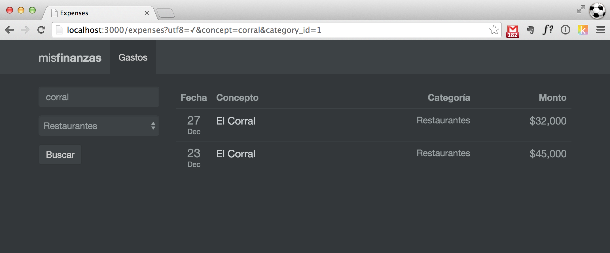

Formularios de Búsqueda en Rails
En Ruby on Rails, los formularios generalmente se usan para crear o editar modelos. Sin embargo, un caso de uso muy frecuente es el de buscar o filtrar información usando un formulario. Por ejemplo, imaginemos una aplicación que tiene una lista de gastos que se puede filtrar por los siguientes criterios:
- El concepto del gasto.
- La categoría a la que pertenece el gasto.
La siguiente imagen muestra la lista de gastos y el formulario de búsqueda que queremos implementar.

Cuando creamos un formulario para crear o editar un modelo, generalmente utilizamos el tag form_for. Sin embargo, existe otro tag llamado form_tag que se utiliza para crear formularios con otros fines diferentes al CRUD y es el que vamos a utilizar para nuestro formulario de búsqueda.
También es importante tener en cuenta que, en vez de un llamado POST, queremos hacer un llamado GET. De esta forma podemos compartir la URL con los criterios de búsqueda por correo o por cualquier otro medio. Por ejemplo, la URL http://midominio.com/expenses?concept=corral&category=4 listaría los gastos que contengan la cadena “corral” en el concepto, y que pertenezcan a la categoría 4 (a esto se le conoce como Bookmarkable URL’s o RESTful URL’s).
Teniendo en cuenta los dos puntos anteriores, el markup del formulario sería el siguiente:
<%= form_tag expenses_path, method: :get do %>
<div class="form-group">
<%= text_field_tag :concept, params[:concept], class: "form-control", placeholder: "Concepto" %>
</div>
<div class="form-group">
<%= select_tag :category_id, options_from_collection_for_select(Category.all, "id", "name", params[:category_id]), prompt: "Categoría", class: "form-control" %>
</div>
<%= submit_tag "Buscar", name: nil, class: "btn btn-primary btn-md" %>
<% end %>La primera línea (el form_tag) genera el siguiente HTML:
<form action="/expenses" method="get">
...
</form>Fíjate que estamos enviando el formulario a la misma acción que utilizamos para listar los gastos (/expenses). Veamos la implementación de esa acción en el controlador:
class ExpensesController < ApplicationController
def index
@expenses = Expense.order("date DESC")
if params[:concept].present?
@expenses = @expenses.where("concept ILIKE ?", "%#{params[:concept]}%")
end
if params[:category_id].present?
@expenses = @expenses.where("category_id = ?", params[:category_id])
end
end
endNota: En este trozo de código estoy utilizando ILIKE que es una funcionalidad exclusiva de PostgreSQL para ignorar mayúsculas o minúsculas al hacer la comparación.
El hash params recibe los datos del formulario que vienen en el URL. Si no recibimos alguno de los parámetros (concept o category_id), simplemente no tenemos en cuenta ese criterio de búsqueda.
Crear un formulario de búsqueda en Ruby on Rails es muy fácil. Solo debes tener en cuenta algunos detalles:
- Utilizar
form_tagen vez deform_for. - Los tags de los campos también son diferentes a los que se utilizan en
form_for. La documentación de estos campos se encuentra en las guías de Rails. - Se recomienda utilizar el método
GETen vez dePOSTpara un formulario de búsqueda. - Generalmente puedes reutilizar el mismo controlador y la misma acción que utilizas para listar.
Espero que este post te ayude a crear tus formularios de búsqueda. Puedes consultar el código fuente de la aplicación en Github.